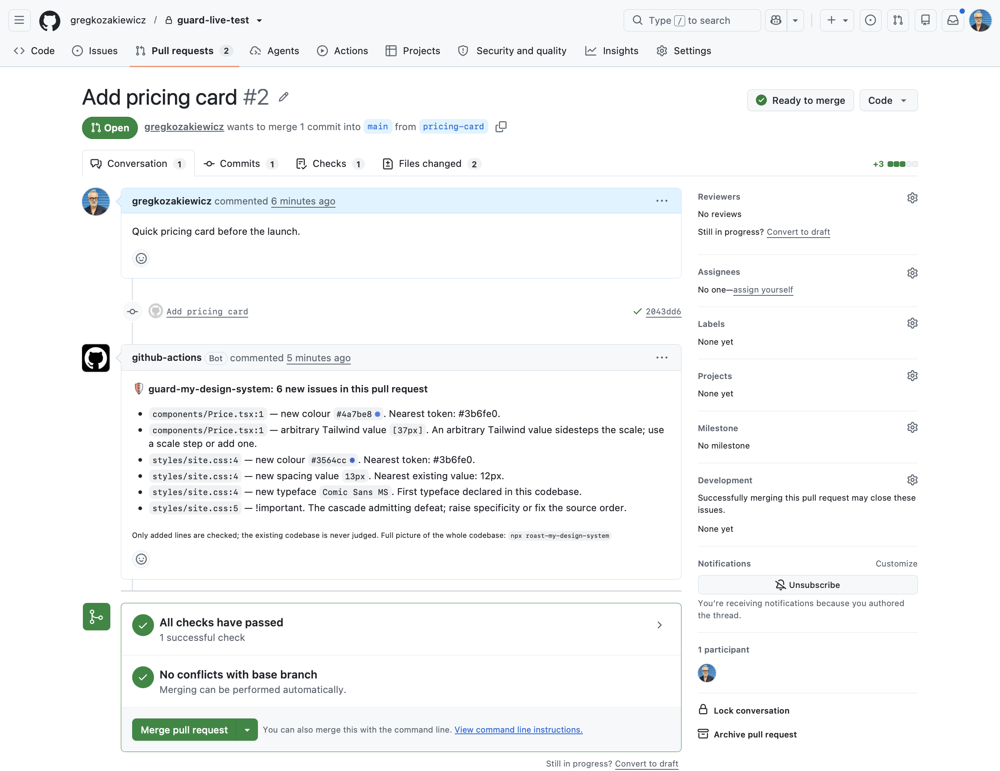

Your design system, guarded.
Your design system dies one pull request at a time. This makes sure it doesn't.
A free pull request guard on npm, and a GitHub Action. It checks only the lines a change adds, says nothing about the past, and points each new sin at the on-system value the author probably meant:
- A hard-coded colour where a token exists, with the nearest token named by its variable: use var(--blue-500), not a hex to go hunting for.
- A spacing value, border radius, font size or shadow the codebase has never used, with the nearest existing value named.
- A typeface the system does not declare, an !important, an arbitrary Tailwind value that sidesteps the scale.
- One sticky comment per pull request, updated in place as fixes land. It counts down instead of piling up, because nothing gets a tool uninstalled faster than spam.
- Strict mode as the one setting. The check fails instead of commenting, for teams that want the door to actually lock.
- No config files, no rules to write, no tokens to register. It learns your system by scanning your repo with the roast-my-design-system engine — CSS, SCSS, styled components, and Lit or Stencil web components alike. Your codebase is the rulebook.
- An escape hatch for the legitimate exception. A guard-ignore-next-line comment silences exactly one line, visibly, with the reason sitting right there in code review.
Only added lines are checked; the existing codebase is never judged. Read only, no network, no telemetry. Every release is provenance signed on npm and passes the snapshot suite before it ships.
Five minutes, once, in .github/workflows/guard.yml. After that you forget it exists, which is the whole point of a smoke alarm.
Judge your uncommitted work against main before anyone else sees it. One command in any repo, no install. Not on GitHub? The same CLI slots into GitLab and Bitbucket pipelines — copy-paste recipes are in the README.
What a pull request sees
The guard's comment on real code: every finding with a file path and line, every stray next to the value the author probably meant.

Every command
The full documentation lives at github.com/gregkozakiewicz/guard-my-design-system.
| Command | What you get |
|---|---|
npx guard-my-design-system@latest | Your working tree's added lines judged against main, in the terminal |
npx guard-my-design-system@latest <path> | Judge a different repo than the current directory |
... --base <ref> | Diff against something other than main |
... --strict | Exit 1 on findings, so it slots into scripts and hooks |
... --markdown | The verdict as markdown, the same text the PR comment carries |
... --json | Findings as JSON on stdout, for scripts and pipelines |
... --exclude lab/ | Leave folders out of the system scan. A .roastignore file at the repo root works too |
... --version | The version, without needing a repo |
The family
roast-my-design-system diagnoses the whole codebase: a health score against a 34-repo benchmark, the receipts behind it, and the agent rules that keep AI-written UI on-system. Guard keeps new work from adding to the pile. Roast diagnoses it, guard protects it, and the guard's own comment ends by pointing at the inspector.
Your design system dies one pull request at a time. This makes sure it doesn't.